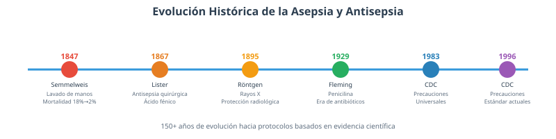
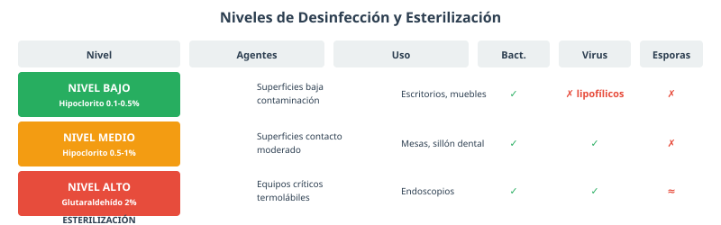
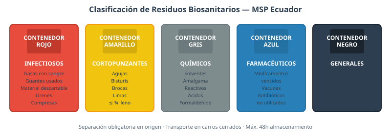
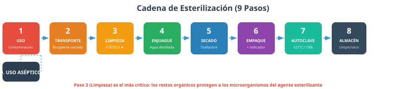

Asepsia y Antisepsia, Métodos de Eliminación de Microorganismos
Introducción a la Asepsia y Antisepsia
▼Diferencia clave entre asepsia, desinfección y esterilización
- Asepsia: PREVIENE la contaminación. Es el concepto global que abarca todas las medidas de prevención.
- Desinfección: ELIMINA la mayoría de patógenos de superficies inanimadas, pero NO garantiza la eliminación de esporas bacterianas.
- Esterilización: DESTRUYE toda forma de vida microbiana, incluidas las esporas bacterianas. Representa el nivel más alto de seguridad.
¿Por qué la odontología genera mayor riesgo?
La odontología se distingue de otras especialidades médicas por una característica particular: la generación de aerosoles intraorales. Cuando el turbine dental, el ultrasonido o el fisurador entran en contacto con la superficie del diente, se produce una nebulización de saliva, sangre, placa bacteriana y restos de tejido que se dispersa en forma de aerosol fino alrededor del campo de trabajo.
Estudios científicos han demostrado que estos aerosoles contienen entre 10,000 y 100,000 bacterias por pieza cúbica de aire inhalado, y que pueden alcanzar distancias de hasta dos metros del punto de contacto. Además, las partículas más finas pueden permanecer suspendidas en el aire durante períodos de hasta sesenta minutos, representando un riesgo de inhalación para todo el personal presente en el área.
Además de los aerosoles, la cavidad oral alberga más de 700 especies bacterianas diferentes, incluyendo microorganismos potencialmente patógenos. El contacto directo con mucosas del paciente es inevitable en prácticamente todos los procedimientos, lo que incrementa el riesgo de transmisión de infecciones.
Evolución histórica de la asepsia y la antisepsia

- 1847 — Ignaz Semmelweis: Médico húngaro que observó que la mortalidad por fiebre puerperal era del 18% en la sala atendida por médicos, frente al 2% en la atendida por comadronas. Demostró que el lavado de manos con cloruro de cal reducía la mortalidad, sentando las bases de la asepsia médica.
- 1867 — Joseph Lister: Introdujo la antisepsia quirúrgica utilizando ácido fenico, demostrando que la eliminación de microorganismos del campo quirúrgico era posible y podía prevenir las infecciones postoperatorias.
- Principios del siglo XX: Desarrollo de los primeros métodos de esterilización por vapor a presión (autoclave), que se convirtió en el estándar de oro para la esterilización de instrumental médico y odontológico.
- 1983 — CDC: Publicación de las Precauciones Universales, que establecieron que toda sangre debía tratarse como potencialmente infecciosa, transformando las prácticas de asepsia en odontología.
Microorganismos y Métodos de Esterilización
▼Microorganismos relevantes en odontología
- Bacterias: Streptococcus mutans (agente causal de la caries dental), Porphyromonas gingivalis (asociada a la periodontitis crónica), Staphylococcus aureus (infecciones de tejidos blandos), Mycobacterium tuberculosis (transmisión por vía aérea durante procedimientos con aerosoles).
- Virus: HBV (sobrevive 7 días en superficies secas, 6-30% de transmisión por pinchazo), HCV (1.8% de transmisión, sin vacuna), HIV (0.3% de transmisión, consecuencias devastadoras), HSV (contacto directo con lesiones activas), SARS-CoV-2 (transformó los protocolos de protección).
- Hongos: Candida albicans (candidiasis oral en pacientes inmunodeprimidos, portadores de prótesis).
- Priones: Proteínas infecciosas extremadamente resistentes a la esterilización convencional.
Métodos de esterilización
- Autoclave (vapor a presión): 121°C a 15 libras/pulg² durante 15-30 minutos, o 134°C a 30 libras durante 4-7 minutos. Es el método más utilizado y confiable en odontología. El vapor de agua saturado bajo presión penetra y destruye todas las formas de vida, incluidas esporas.
- Calor seco (estufa): 160-170°C durante 1-2 horas. Se utiliza para material que no resiste la humedad del vapor, como polvos y aceites. Tiene menor capacidad de penetración que el vapor.
- Óxido de etileno: Gas esterilizante a 37-63°C durante 1-6 horas. Para material sensible al calor (endoscopios, plásticos). Requiere aireación post-ciclo de 12-24 horas para eliminar residuos tóxicos.
- Plasma de peróxido de hidrógeno: Temperatura baja, ciclos rápidos. Para instrumental delicado y dispositivos electrónicos.
Control y monitoreo de la esterilización
- Indicadores químicos: Tiras que cambian de color según las condiciones de tiempo y temperatura. Confirmación visual de que el ciclo se completó.
- Indicadores biológicos: Bacillus stearothermophilus en ampolletas. Siembra post-ciclo: sin crecimiento = esterilización exitosa. Es la prueba definitiva.
- Control de carga: No sobrecargar la autoclave; el vapor debe circular libremente entre los instrumentos.
Manejo de Residuos y Desechos Peligrosos
▼Niveles de desinfección

- Nivel bajo: Hipoclorito 0.1-0.5%, alcohol 70%. Elimina bacterias vegetativas y algunos virus lipofílicos. Para superficies de baja contaminación.
- Nivel medio: Hipoclorito 0.5-1%, amonio cuaternario. Elimina bacterias, hongos, virus (incluidos no lipofílicos como HBV), pero NO esporas.
- Nivel alto: Glutaraldehído 2%, peróxido de hidrógeno 6%. Elimina todo excepto esporas. Para equipos críticos.
Clasificación de residuos (MSP Ecuador)

- Infecciosos (Contenedor Rojo): Gasas, guantes, material contaminado con sangre o fluidos.
- Cortopunzantes (Contenedor Amarillo): Agujas, bisturís, brocas, limas. Container rígido irrompible, nunca llenar más de ¾.
- Químicos (Contenedor Gris): Solventes, amalgama, reactivos, ácidos.
- Farmacéuticos (Contenedor Azul): Medicamentos vencidos, antibióticos no utilizados.
- Generales (Contenedor Negro): Papel, cartón, envases no contaminados.
Protocolos de limpieza y desinfección
- Superficies de trabajo: Detergente neutro → hipoclorito 0.5% → enjuagar → secar. Frecuencia: entre cada paciente.
- Instrumental contaminado: Remoción de restos orgánicos → enjuague → secado → empaque → autoclave. Nunca esterilizar instrumental sucio.
- Pisos: Detergente neutro diariamente → hipoclorito 0.5% al finalizar la jornada.
Antisepsia para el Personal y el Paciente
▼Principales antisépticos
- Clorhexidina: 0.12% (enjuague bucal), 2% (lavado de manos/preparación de piel). Espectro: bacterias Gram+ y Gram-, algunos hongos y virus. Ventaja: efecto residual hasta 6 horas. Limitación: no elimina esporas.
- Yodopovidona: 1-10% (preparación de piel), 7.5% (lavado quirúrgico). Espectro amplio incluyendo esporas. Limitación: puede causar irritación; contraindicada en hipertiroidismo.
- Alcohol etílico 70%: Desnaturaliza proteínas y disuelve lípidos. Efectivo contra bacterias, hongos, virus lipofílicos. No tiene efecto residual (se evapora rápidamente).
- Glutaraldehído 2%: Nivel alto. Para equipos termolábiles. Tóxico: requiere áreas ventiladas.
Protocolo de antisepsia
- Preoperatoria personal: Lavado quirúrgico 2-5 minutos con jabón antiséptico → toallas estériles → guantes estériles.
- Preoperatoria paciente: Yodopovidona 10% o clorhexidina 2% en zona de inyección. Enjuague con clorhexidina 0.12%.
- Postoperatoria: Lavado de manos → retiro secuencial EPP → desinfección de superficies → clasificación de residuos.
Barreras de Protección y Asepsia Clínica
▼Sistema de barreras
- Fundas y envolturas: Para empaquetar instrumental. Permiten entrada de vapor y mantienen esterilidad.
- Protectores de superficies: Plásticos o compresas para sillón, mesa, equipos. Cambiar entre cada paciente.
- Campos estériles: Para cirugía oral. Crean zona de trabajo estéril alrededor del campo quirúrgico.
- Recubrimientos de equipos: Fundas para succión, luz dental, pieza de mano.
Cadena de esterilización (9 pasos)

- Uso: El instrumental se contamina con sangre y saliva del paciente.
- Transporte: En recipiente cerrado hasta la zona de procesamiento.
- Limpieza: Remoción mecánica de restos orgánicos con detergente enzimático. Paso crítico: los restos protegen a los microorganismos del agente esterilizante.
- Enjuague: Con agua destilada para remover residuos de detergente.
- Secado: Con toallas de papel o aire comprimido.
- Inspección y empaque: Verificar limpieza, empacar en material adecuado con indicador químico.
- Esterilización: En autoclave según parámetros establecidos.
- Almacenamiento: En armario limpio, seco y cerrado.
- Uso: Con técnica aséptica, verificando integridad del empaque.